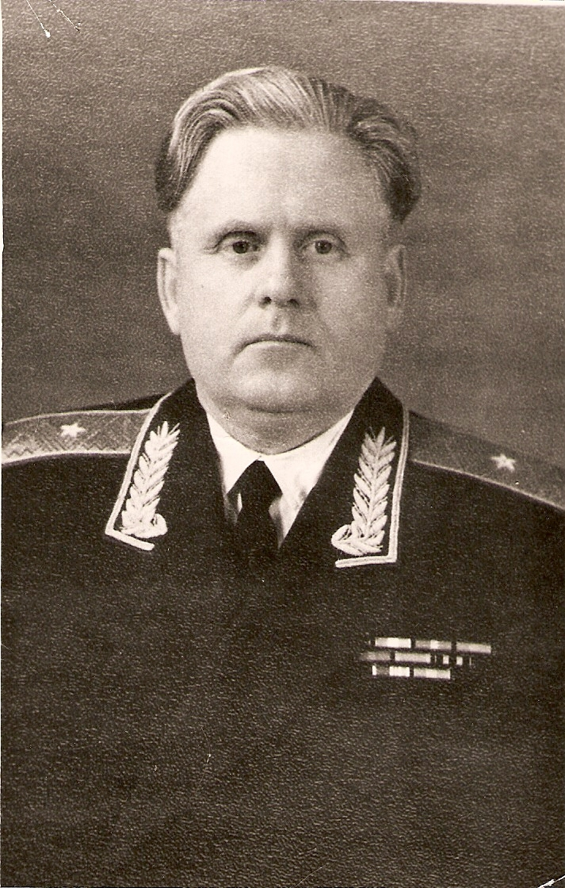

Ордин Аркадий Гаврилович
Ордин Аркадий Гаврилович
(1907 – 07.1977)
Родился в деревне Рыжухино Енангского сельсовета. Здесь он закончил сначала начальную,
а затем Нижне-Енангскую семилетнюю школу.
Потом закончил Никольский педагогический техникум и был направлен «избачом» в Верхнюю Кему.
Затем его переводят в Никольскую районную избу читальню.
В 1930 году поступает в Ленинградский педагогический институт имени Герцена.
После окончания института остается в аспирантуре на кафедре истории СССР.
В 1935 году молодого аспиранта призывают в ряды РККА, в Ленинградский военный округ, где вскоре назначают начальником отдела пропаганды политуправления округа. В 1938 году Аркадия Гавриловича назначают преподавателем Высших авиационных курсов. Здесь он настойчиво изучает военное дело.
В апреле 1943 года была удовлетворена его просьба об отправке на фронт. Там уже сражался с врагом его младший брат Александр. Аркадий Гаврилович служил в войсках ПВО, возглавлял отдел пропаганды и агитации в отдельной армии противовоздушной обороны и одновременно являлся заместителем начальника политуправления армии. Свою первую награду орден Красной Звезды он получил за боевое отличие 22 февраля 1944 года. В 1944 году полковник Ордин сражается в составе войск 3-го Прибалтийского фронта. Награжден еще тремя орденами и многими медалями.
После войны продолжает службу в Вооруженных силах и занимает ответственные посты в главном политическом управлении Военно-воздушных сил СССР. Уволился в запас в звании генерал-майора в 1962 году. После увольнения возглавил кабинет проблем в институте общественных наук при ЦК КПСС. Умер в Москве, похоронен на Хованском кладбище.
В 1935 году молодого аспиранта призывают в ряды РККА, в Ленинградский военный округ, где вскоре назначают начальником отдела пропаганды политуправления округа. В 1938 году Аркадия Гавриловича назначают преподавателем Высших авиационных курсов. Здесь он настойчиво изучает военное дело.
В апреле 1943 года была удовлетворена его просьба об отправке на фронт. Там уже сражался с врагом его младший брат Александр. Аркадий Гаврилович служил в войсках ПВО, возглавлял отдел пропаганды и агитации в отдельной армии противовоздушной обороны и одновременно являлся заместителем начальника политуправления армии. Свою первую награду орден Красной Звезды он получил за боевое отличие 22 февраля 1944 года. В 1944 году полковник Ордин сражается в составе войск 3-го Прибалтийского фронта. Награжден еще тремя орденами и многими медалями.
После войны продолжает службу в Вооруженных силах и занимает ответственные посты в главном политическом управлении Военно-воздушных сил СССР. Уволился в запас в звании генерал-майора в 1962 году. После увольнения возглавил кабинет проблем в институте общественных наук при ЦК КПСС. Умер в Москве, похоронен на Хованском кладбище.